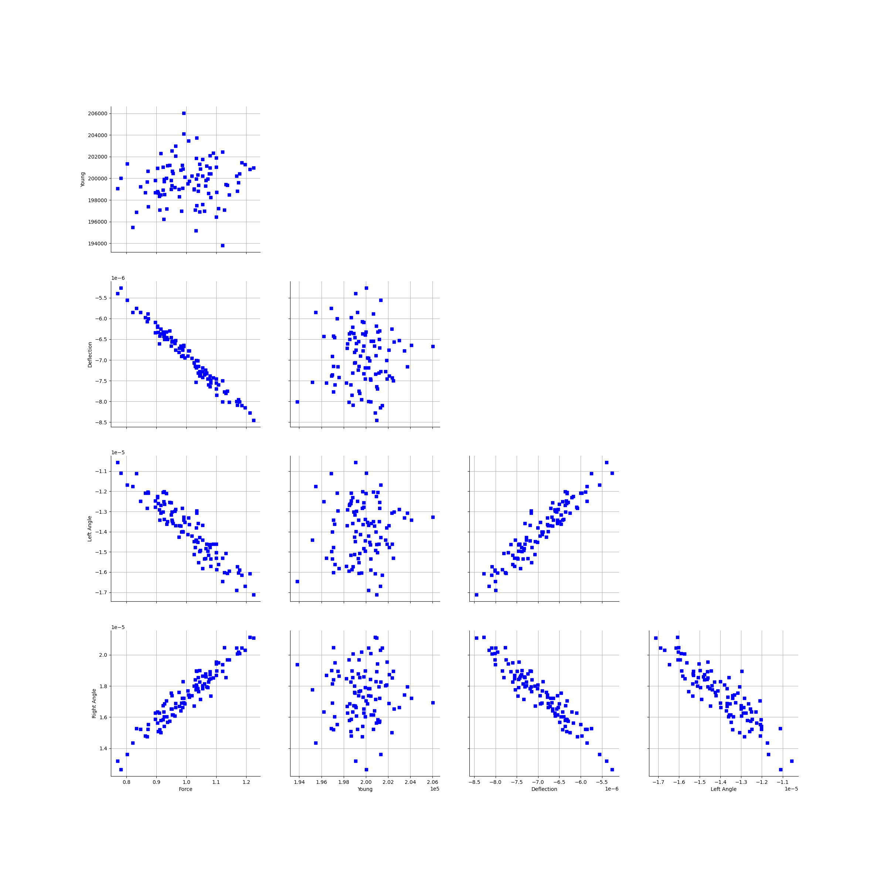
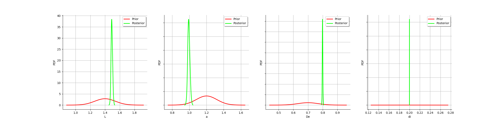
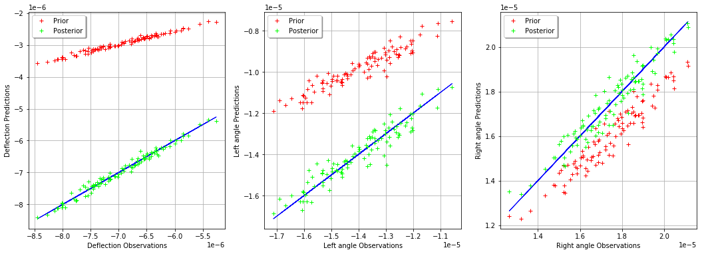
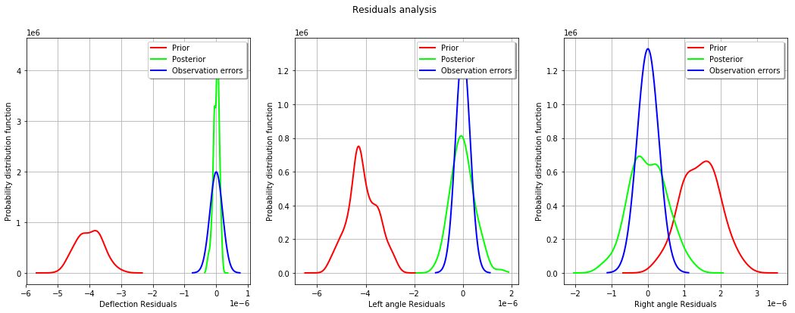
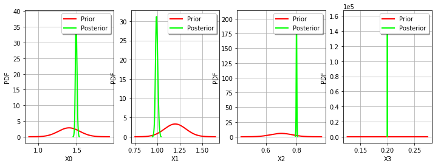

Calibration of the deflection of a tube¶
Description¶
We consider the deflection of a tube under a vertical stress.
The parameters of the model are: * F : the strength, * L : the length of the tube, * a : position of the force, * D : external diameter of the tube, * d : internal diameter of the tube, * E : Young modulus.
The following figure presents the internal and external diameter of the tube:
The area moment of inertia of the cross section about the neutral axis of a round tube (i.e. perpendicular to the section) with external and internal diameters  and
and  are:
are:

The vertical deflection at point  is:
is:
where  . The angle of the tube at the left end is:
. The angle of the tube at the left end is:

and the angle of the tube at the right end is:

The following table presents the distributions of the random variables. These variables are assumed to be independent.
Variable |
Distribution |
|---|---|
F |
Normal(1,0.1) |
L |
Normal(1.5,0.01) |
a |
Uniform(0.7,1.2) |
D |
Triangular(0.75,0.8,0.85) |
d |
Triangular(0.09,0.1,0.11) |
E |
Normal(200000,2000) |
References¶
Deflection of beams by Russ Elliott. http://www.clag.org.uk/beam.html
https://upload.wikimedia.org/wikipedia/commons/f/ff/Simple_beam_with_offset_load.svg
Shigley’s Mechanical Engineering Design (9th Edition), Richard G. Budynas, J. Keith Nisbettn, McGraw Hill (2011)
Mechanics of Materials (7th Edition), James M. Gere, Barry J. Goodno, Cengage Learning (2009)
Statics and Mechanics of Materials (5th Edition), Ferdinand Beer, E. Russell Johnston, Jr., John DeWolf, David Mazurek. Mc Graw Hill (2011) Chapter 15: deflection of beams.
{kind=link}
Create a calibration problem¶
[1]:
import openturns as ot
We use the variable names De for the external diameter and di for the internal diameter because the symbolic function engine is not case sensitive, hence the variable names D and d would not be distiguished.
[2]:
inputsvars=["F","L","a","De","di","E"]
formula = "var I:=pi_*(De^4-di^4)/32; var b:=L-a; g1:=-F*a^2*(L-a)^2/(3*E*L*I); g2:=-F*b*(L^2-b^2)/(6*E*L*I); g3:=F*a*(L^2-a^2)/(6*E*L*I)"
g = ot.SymbolicFunction(inputsvars,["g1","g2","g3"],formula)
g.setOutputDescription(["Deflection","Left angle","Right angle"])
[3]:
XF=ot.Normal(1,0.1)
XE=ot.Normal(200000,2000)
XF.setDescription(["Force"])
XE.setDescription(["Young Modulus"])
[4]:
XL = ot.Dirac(1.5)
Xa = ot.Dirac(1.0)
XD = ot.Dirac(0.8)
Xd = ot.Dirac(0.1)
XL.setDescription(["Longueur"])
Xa.setDescription(["Location"])
XD.setDescription(["External diameter"])
Xd.setDescription(["Internal diameter"])
[5]:
inputDistribution = ot.ComposedDistribution([XF,XL,Xa,XD,Xd,XE])
[6]:
sampleSize = 100
inputSample = inputDistribution.getSample(sampleSize)
inputSample[0:5]
[6]:
| Force | Longueur | Location | External diameter | Internal diameter | Young Modulus | |
|---|---|---|---|---|---|---|
| 0 | 1.0608201651218765 | 1.5 | 1.0 | 0.8 | 0.1 | 196966.07036307675 |
| 1 | 0.8733826897783343 | 1.5 | 1.0 | 0.8 | 0.1 | 197401.2408213367 |
| 2 | 0.9561734380039586 | 1.5 | 1.0 | 0.8 | 0.1 | 200460.74487807832 |
| 3 | 1.1205478200828576 | 1.5 | 1.0 | 0.8 | 0.1 | 193805.25155946863 |
| 4 | 0.7818614765383486 | 1.5 | 1.0 | 0.8 | 0.1 | 200026.45999395067 |
[7]:
outputDeflection = g(inputSample)
outputDeflection[0:5]
[7]:
| Deflection | Left angle | Right angle | |
|---|---|---|---|
| 0 | -7.442589066378747e-06 | -1.4885178132757494e-05 | 1.8606472665946867e-05 |
| 1 | -6.114041697475519e-06 | -1.2228083394951039e-05 | 1.52851042436888e-05 |
| 2 | -6.591451026631792e-06 | -1.3182902053263584e-05 | 1.647862756657948e-05 |
| 3 | -7.98984857356334e-06 | -1.597969714712668e-05 | 1.997462143390835e-05 |
| 4 | -5.401520898870577e-06 | -1.0803041797741154e-05 | 1.3503802247176442e-05 |
[8]:
observationNoiseSigma = [0.1e-6,0.05e-5,0.05e-5]
observationNoiseCovariance = ot.CovarianceMatrix(3)
for i in range(3):
observationNoiseCovariance[i,i] = observationNoiseSigma[i]**2
[9]:
noiseSigma = ot.Normal([0.,0.,0.],observationNoiseCovariance)
sampleObservationNoise = noiseSigma.getSample(sampleSize)
observedOutput = outputDeflection + sampleObservationNoise
observedOutput[0:5]
[9]:
| Deflection | Left angle | Right angle | |
|---|---|---|---|
| 0 | -7.356762209314677e-06 | -1.5338461089948315e-05 | 1.814806773342329e-05 |
| 1 | -5.997719622988609e-06 | -1.2077124238651994e-05 | 1.553026987801388e-05 |
| 2 | -6.543908569160418e-06 | -1.3577254181436902e-05 | 1.614390297308445e-05 |
| 3 | -8.003641369111095e-06 | -1.646546275829769e-05 | 1.9380702536539273e-05 |
| 4 | -5.258700570801308e-06 | -1.1097656728695641e-05 | 1.2637714263644793e-05 |
[10]:
observedInput = ot.Sample(sampleSize,2)
observedInput[:,0] = inputSample[:,0] # F
observedInput[:,1] = inputSample[:,5] # E
observedInput.setDescription(["Force","Young Modulus"])
observedInput[0:5]
[10]:
| Force | Young Modulus | |
|---|---|---|
| 0 | 1.0608201651218765 | 196966.07036307675 |
| 1 | 0.8733826897783343 | 197401.2408213367 |
| 2 | 0.9561734380039586 | 200460.74487807832 |
| 3 | 1.1205478200828576 | 193805.25155946863 |
| 4 | 0.7818614765383486 | 200026.45999395067 |
[11]:
fullSample = ot.Sample(sampleSize,5)
fullSample[:,0:2] = observedInput
fullSample[:,2:5] = observedOutput
fullSample.setDescription(["Force","Young","Deflection","Left Angle","Right Angle"])
fullSample[0:5]
[11]:
| Force | Young | Deflection | Left Angle | Right Angle | |
|---|---|---|---|---|---|
| 0 | 1.0608201651218765 | 196966.07036307675 | -7.356762209314677e-06 | -1.5338461089948315e-05 | 1.814806773342329e-05 |
| 1 | 0.8733826897783343 | 197401.2408213367 | -5.997719622988609e-06 | -1.2077124238651994e-05 | 1.553026987801388e-05 |
| 2 | 0.9561734380039586 | 200460.74487807832 | -6.543908569160418e-06 | -1.3577254181436902e-05 | 1.614390297308445e-05 |
| 3 | 1.1205478200828576 | 193805.25155946863 | -8.003641369111095e-06 | -1.646546275829769e-05 | 1.9380702536539273e-05 |
| 4 | 0.7818614765383486 | 200026.45999395067 | -5.258700570801308e-06 | -1.1097656728695641e-05 | 1.2637714263644793e-05 |
[12]:
ot.Pairs(fullSample)
[12]:

Setting up the calibration¶
[13]:
XL = 1.4 # Exact : 1.5
Xa = 1.2 # Exact : 1.0
XD = 0.7 # Exact : 0.8
Xd = 0.2 # Exact : 0.1
thetaPrior = ot.Point([XL,Xa,XD,Xd])
[14]:
sigmaXL = 0.1 * XL
sigmaXa = 0.1 * Xa
sigmaXD = 0.1 * XD
sigmaXd = 0.1 * Xd
parameterCovariance = ot.CovarianceMatrix(4)
parameterCovariance[0,0] = sigmaXL**2
parameterCovariance[1,1] = sigmaXa**2
parameterCovariance[2,2] = sigmaXD**2
parameterCovariance[3,3] = sigmaXd**2
parameterCovariance
[14]:
[[ 0.0196 0 0 0 ]
[ 0 0.0144 0 0 ]
[ 0 0 0.0049 0 ]
[ 0 0 0 0.0004 ]]
[15]:
calibratedIndices = [1,2,3,4]
calibrationFunction = ot.ParametricFunction(g, calibratedIndices, thetaPrior)
[16]:
sigmaObservation = [0.2e-6,0.03e-5,0.03e-5] # Exact : 0.1e-6
[17]:
errorCovariance = ot.CovarianceMatrix(3)
errorCovariance[0,0] = sigmaObservation[0]**2
errorCovariance[1,1] = sigmaObservation[1]**2
errorCovariance[2,2] = sigmaObservation[2]**2
[18]:
calibrationFunction.setParameter(thetaPrior)
predictedOutput = calibrationFunction(observedInput)
predictedOutput[0:5]
[18]:
| Deflection | Left angle | Right angle | |
|---|---|---|---|
| 0 | -3.154534354474193e-06 | -1.0515114514913978e-05 | 1.7087061086735213e-05 |
| 1 | -2.591430805511134e-06 | -8.638102685037113e-06 | 1.4036916863185308e-05 |
| 2 | -2.79378029928786e-06 | -9.312600997626203e-06 | 1.5132976621142579e-05 |
| 3 | -3.3864897803118274e-06 | -1.1288299267706095e-05 | 1.8343486310022407e-05 |
| 4 | -2.2894295372118615e-06 | -7.631431790706208e-06 | 1.2401076659897585e-05 |
A visualisation class¶
[19]:
"""
A graphics class to analyze the results of calibration.
"""
import pylab as pl
import openturns as ot
import openturns.viewer as otv
class CalibrationAnalysis:
def __init__(self,calibrationResult,model,inputObservations,outputObservations):
"""
Plots the prior and posterior distribution of the calibrated parameter theta.
Parameters
----------
calibrationResult : :class:`~openturns.calibrationResult`
The result of a calibration.
model : 2-d sequence of float
The function to calibrate.
inputObservations : :class:`~openturns.Sample`
The sample of input values of the model linked to the observations.
outputObservations : 2-d sequence of float
The sample of output values of the model linked to the observations.
"""
self.model = model
self.outputAtPrior = None
self.outputAtPosterior = None
self.calibrationResult = calibrationResult
self.observationColor = "blue"
self.priorColor = "red"
self.posteriorColor = "green"
self.inputObservations = inputObservations
self.outputObservations = outputObservations
self.unitlength = 6 # inch
# Compute yAtPrior
meanPrior = calibrationResult.getParameterPrior().getMean()
model.setParameter(meanPrior)
self.outputAtPrior=model(inputObservations)
# Compute yAtPosterior
meanPosterior = calibrationResult.getParameterPosterior().getMean()
model.setParameter(meanPosterior)
self.outputAtPosterior=model(inputObservations)
return None
def drawParameterDistributions(self):
"""
Plots the prior and posterior distribution of the calibrated parameter theta.
"""
thetaPrior = self.calibrationResult.getParameterPrior()
thetaDescription = thetaPrior.getDescription()
thetaPosterior = self.calibrationResult.getParameterPosterior()
thetaDim = thetaPosterior.getDimension()
fig = pl.figure(figsize=(12, 4))
for i in range(thetaDim):
graph = ot.Graph("",thetaDescription[i],"PDF",True,"topright")
# Prior distribution
thetaPrior_i = thetaPrior.getMarginal(i)
priorPDF = thetaPrior_i.drawPDF()
priorPDF.setColors([self.priorColor])
priorPDF.setLegends(["Prior"])
graph.add(priorPDF)
# Posterior distribution
thetaPosterior_i = thetaPosterior.getMarginal(i)
postPDF = thetaPosterior_i.drawPDF()
postPDF.setColors([self.posteriorColor])
postPDF.setLegends(["Posterior"])
graph.add(postPDF)
'''
If the prior is a Dirac, set the vertical axis bounds to the posterior.
Otherwise, the Dirac set to [0,1], where the 1 can be much larger
than the maximum PDF of the posterior.
'''
if (thetaPrior_i.getName()=="Dirac"):
# The vertical (PDF) bounds of the posterior
postbb = postPDF.getBoundingBox()
pdf_upper = postbb.getUpperBound()[1]
pdf_lower = postbb.getLowerBound()[1]
# Set these bounds to the graph
bb = graph.getBoundingBox()
graph_upper = bb.getUpperBound()
graph_upper[1] = pdf_upper
bb.setUpperBound(graph_upper)
graph_lower = bb.getLowerBound()
graph_lower[1] = pdf_lower
bb.setLowerBound(graph_lower)
graph.setBoundingBox(bb)
# Add it to the graphics
ax = fig.add_subplot(1, thetaDim, i+1)
_ = otv.View(graph, figure=fig, axes=[ax])
return fig
def drawObservationsVsPredictions(self):
"""
Plots the output of the model depending
on the output observations before and after calibration.
"""
ySize = self.outputObservations.getSize()
yDim = self.outputObservations.getDimension()
graph = ot.Graph("","Observations","Predictions",True,"topleft")
# Plot the diagonal
if (yDim==1):
graph = self._drawObservationsVsPredictions1Dimension(self.outputObservations,self.outputAtPrior,self.outputAtPosterior)
elif (ySize==1):
outputObservations = ot.Sample(self.outputObservations[0],1)
outputAtPrior = ot.Sample(self.outputAtPrior[0],1)
outputAtPosterior = ot.Sample(self.outputAtPosterior[0],1)
graph = self._drawObservationsVsPredictions1Dimension(outputObservations,outputAtPrior,outputAtPosterior)
else:
fig = pl.figure(figsize=(self.unitlength*yDim, self.unitlength))
for i in range(yDim):
outputObservations = self.outputObservations[:,i]
outputAtPrior = self.outputAtPrior[:,i]
outputAtPosterior = self.outputAtPosterior[:,i]
graph = self._drawObservationsVsPredictions1Dimension(outputObservations,outputAtPrior,outputAtPosterior)
ax = fig.add_subplot(1, yDim, i+1)
_ = otv.View(graph, figure=fig, axes=[ax])
return graph
def _drawObservationsVsPredictions1Dimension(self,outputObservations,outputAtPrior,outputAtPosterior):
"""
Plots the output of the model depending
on the output observations before and after calibration.
Can manage only 1D samples.
"""
yDim = outputObservations.getDimension()
ydescription = outputObservations.getDescription()
xlabel = "%s Observations" % (ydescription[0])
ylabel = "%s Predictions" % (ydescription[0])
graph = ot.Graph("",xlabel,ylabel,True,"topleft")
# Plot the diagonal
if (yDim==1):
curve = ot.Curve(outputObservations, outputObservations)
curve.setColor(self.observationColor)
graph.add(curve)
else:
raise TypeError('Output observations are not 1D.')
# Plot the predictions before
yPriorDim = outputAtPrior.getDimension()
if (yPriorDim==1):
cloud = ot.Cloud(outputObservations, outputAtPrior)
cloud.setColor(self.priorColor)
cloud.setLegend("Prior")
graph.add(cloud)
else:
raise TypeError('Output prior predictions are not 1D.')
# Plot the predictions after
yPosteriorDim = outputAtPosterior.getDimension()
if (yPosteriorDim==1):
cloud = ot.Cloud(outputObservations, outputAtPosterior)
cloud.setColor(self.posteriorColor)
cloud.setLegend("Posterior")
graph.add(cloud)
else:
raise TypeError('Output posterior predictions are not 1D.')
return graph
def drawResiduals(self):
"""
Plot the distribution of the residuals and
the distribution of the observation errors.
"""
ySize = self.outputObservations.getSize()
yDim = self.outputObservations.getDimension()
yPriorSize = self.outputAtPrior.getSize()
yPriorDim = self.outputAtPrior.getDimension()
if (yDim==1):
observationsError = self.calibrationResult.getObservationsError()
graph = self._drawResiduals1Dimension(self.outputObservations,self.outputAtPrior,self.outputAtPosterior,observationsError)
elif (ySize==1):
outputObservations = ot.Sample(self.outputObservations[0],1)
outputAtPrior = ot.Sample(self.outputAtPrior[0],1)
outputAtPosterior = ot.Sample(self.outputAtPosterior[0],1)
observationsError = self.calibrationResult.getObservationsError()
# In this case, we cannot draw observationsError ; just
# pass the required input argument, but it is not actually used.
graph = self._drawResiduals1Dimension(outputObservations,outputAtPrior,outputAtPosterior,observationsError)
else:
observationsError = self.calibrationResult.getObservationsError()
fig = pl.figure(figsize=(self.unitlength*yDim, self.unitlength))
for i in range(yDim):
outputObservations = self.outputObservations[:,i]
outputAtPrior = self.outputAtPrior[:,i]
outputAtPosterior = self.outputAtPosterior[:,i]
observationsErrorYi = observationsError.getMarginal(i)
graph = self._drawResiduals1Dimension(outputObservations,outputAtPrior,outputAtPosterior,observationsErrorYi)
ax = fig.add_subplot(1, yDim, i+1)
_ = otv.View(graph, figure=fig, axes=[ax])
return graph
def _drawResiduals1Dimension(self,outputObservations,outputAtPrior,outputAtPosterior,observationsError):
"""
Plot the distribution of the residuals and
the distribution of the observation errors.
Can manage only 1D samples.
"""
ydescription = outputObservations.getDescription()
xlabel = "%s Residuals" % (ydescription[0])
graph = ot.Graph("Residuals analysis",xlabel,"Probability distribution function",True,"topright")
yDim = outputObservations.getDimension()
yPriorDim = outputAtPrior.getDimension()
yPosteriorDim = outputAtPrior.getDimension()
if (yDim==1) and (yPriorDim==1) :
posteriorResiduals = outputObservations - outputAtPrior
kernel = ot.KernelSmoothing()
fittedDist = kernel.build(posteriorResiduals)
residualPDF = fittedDist.drawPDF()
residualPDF.setColors([self.priorColor])
residualPDF.setLegends(["Prior"])
graph.add(residualPDF)
else:
raise TypeError('Output prior observations are not 1D.')
if (yDim==1) and (yPosteriorDim==1) :
posteriorResiduals = outputObservations - outputAtPosterior
kernel = ot.KernelSmoothing()
fittedDist = kernel.build(posteriorResiduals)
residualPDF = fittedDist.drawPDF()
residualPDF.setColors([self.posteriorColor])
residualPDF.setLegends(["Posterior"])
graph.add(residualPDF)
else:
raise TypeError('Output posterior observations are not 1D.')
# Plot the distribution of the observation errors
if (observationsError.getDimension()==1):
# In the other case, we just do not plot
obserrgraph = observationsError.drawPDF()
obserrgraph.setColors([self.observationColor])
obserrgraph.setLegends(["Observation errors"])
graph.add(obserrgraph)
return graph
def drawObservationsVsInputs(self):
"""
Plots the observed output of the model depending
on the observed input before and after calibration.
"""
xSize = self.inputObservations.getSize()
ySize = self.outputObservations.getSize()
xDim = self.inputObservations.getDimension()
yDim = self.outputObservations.getDimension()
xdescription = self.inputObservations.getDescription()
ydescription = self.outputObservations.getDescription()
# Observations
if (xDim==1) and (yDim==1):
graph = self._drawObservationsVsInputs1Dimension(self.inputObservations,self.outputObservations,self.outputAtPrior,self.outputAtPosterior)
elif (xSize==1) and (ySize==1):
inputObservations = ot.Sample(self.inputObservations[0],1)
outputObservations = ot.Sample(self.outputObservations[0],1)
outputAtPrior = ot.Sample(self.outputAtPrior[0],1)
outputAtPosterior = ot.Sample(self.outputAtPosterior[0],1)
graph = self._drawObservationsVsInputs1Dimension(inputObservations,outputObservations,outputAtPrior,outputAtPosterior)
else:
fig = pl.figure(figsize=(xDim*self.unitlength, yDim*self.unitlength))
for i in range(xDim):
for j in range(yDim):
k = xDim * j + i
inputObservations = self.inputObservations[:,i]
outputObservations = self.outputObservations[:,j]
outputAtPrior = self.outputAtPrior[:,j]
outputAtPosterior = self.outputAtPosterior[:,j]
graph = self._drawObservationsVsInputs1Dimension(inputObservations,outputObservations,outputAtPrior,outputAtPosterior)
ax = fig.add_subplot(yDim, xDim, k+1)
_ = otv.View(graph, figure=fig, axes=[ax])
return graph
def _drawObservationsVsInputs1Dimension(self,inputObservations,outputObservations,outputAtPrior,outputAtPosterior):
"""
Plots the observed output of the model depending
on the observed input before and after calibration.
Can manage only 1D samples.
"""
xDim = inputObservations.getDimension()
if (xDim!=1):
raise TypeError('Input observations are not 1D.')
yDim = outputObservations.getDimension()
xdescription = inputObservations.getDescription()
ydescription = outputObservations.getDescription()
graph = ot.Graph("",xdescription[0],ydescription[0],True,"topright")
# Observations
if (yDim==1):
cloud = ot.Cloud(inputObservations,outputObservations)
cloud.setColor(self.observationColor)
cloud.setLegend("Observations")
graph.add(cloud)
else:
raise TypeError('Output observations are not 1D.')
# Model outputs before calibration
yPriorDim = outputAtPrior.getDimension()
if (yPriorDim==1):
cloud = ot.Cloud(inputObservations,outputAtPrior)
cloud.setColor(self.priorColor)
cloud.setLegend("Prior")
graph.add(cloud)
else:
raise TypeError('Output prior predictions are not 1D.')
# Model outputs after calibration
yPosteriorDim = outputAtPosterior.getDimension()
if (yPosteriorDim==1):
cloud = ot.Cloud(inputObservations,outputAtPosterior)
cloud.setColor(self.posteriorColor)
cloud.setLegend("Posterior")
graph.add(cloud)
else:
raise TypeError('Output posterior predictions are not 1D.')
return graph
Calibration with gaussian non linear least squares¶
[20]:
algo = ot.GaussianNonLinearCalibration(calibrationFunction, observedInput, observedOutput, thetaPrior, parameterCovariance, errorCovariance)
[21]:
algo.run()
[22]:
calibrationResult = algo.getResult()
Analysis of the results¶
[23]:
thetaMAP = calibrationResult.getParameterMAP()
thetaMAP
[23]:
[1.49042,0.991571,0.798252,0.199874]
Compute a 95% confidence interval for each marginal.
[24]:
thetaPosterior = calibrationResult.getParameterPosterior()
alpha = 0.95
dim = thetaPosterior.getDimension()
for i in range(dim):
print(thetaPosterior.getMarginal(i).computeBilateralConfidenceInterval(alpha))
[1.4721, 1.514]
[0.969123, 1.02096]
[0.794538, 0.802743]
[0.199868, 0.199879]
[25]:
mypcr = CalibrationAnalysis(calibrationResult,calibrationFunction, observedInput, observedOutput)
[26]:
_ = mypcr.drawObservationsVsInputs()

[27]:
_ = mypcr.drawObservationsVsPredictions()

[28]:
_ = mypcr.drawResiduals()

[29]:
_ = mypcr.drawParameterDistributions()
